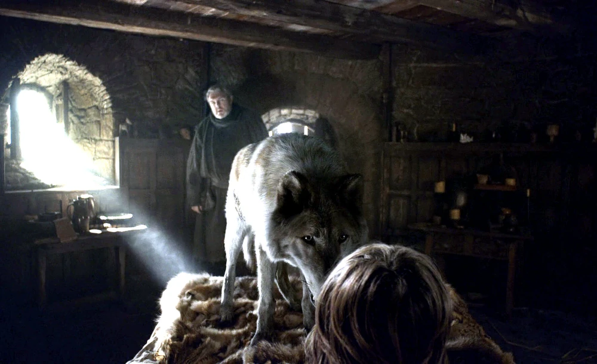

1ª TEMPORADA
Verão é o lobo gigante de Bran Stark. Sempre muito fiel, tem uma ligação misteriosa com Bran, compartilhando visões e até mesmo sentimentos.
6ª TEMPORADA
Verão permanece na caverna com o grupo. Após Bran ser tocado pelo Rei da Noite, os caminhantes brancos atacam a caverna, agora desprovida da magia que os impediam de entrar. Verão salva Meera de uma das criaturas, e embora ela o chame quando está fugindo, Verão se sacrifica atacando as criaturas que continuam entrando na caverna, e dando tempo para que Bran e os outros pudessem fugir.